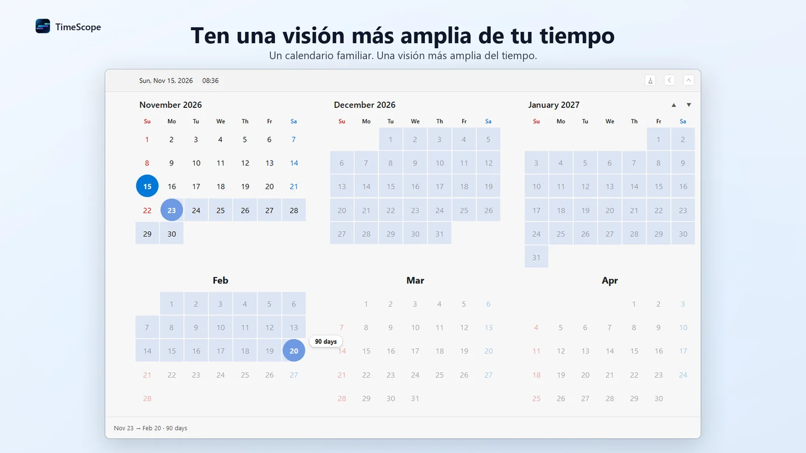
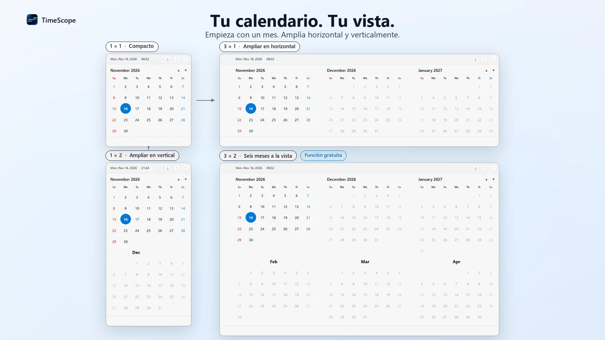
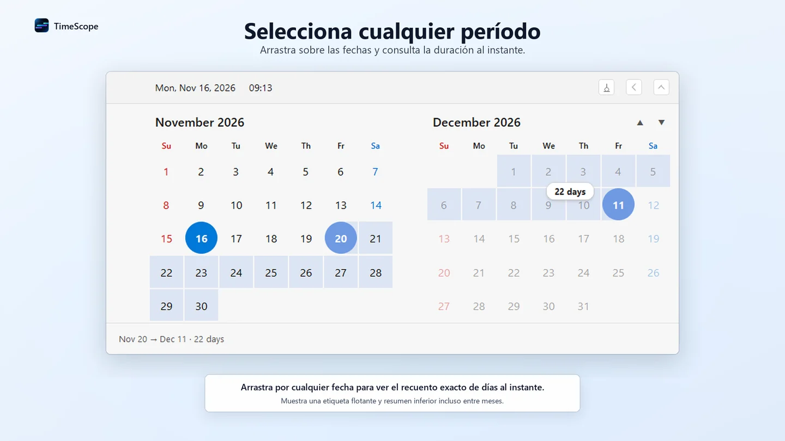
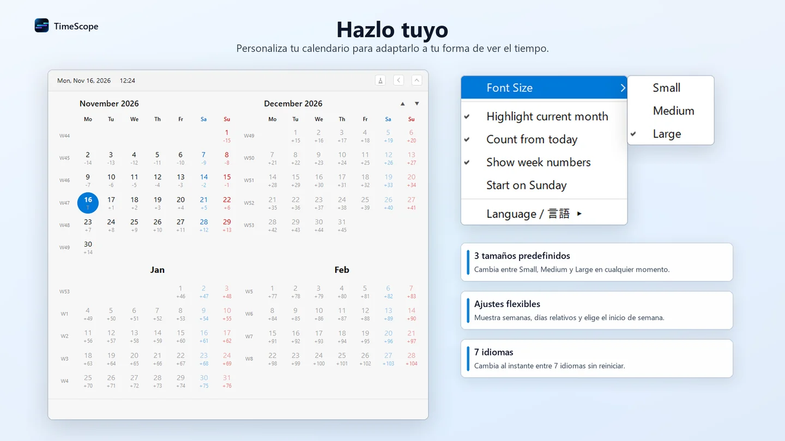
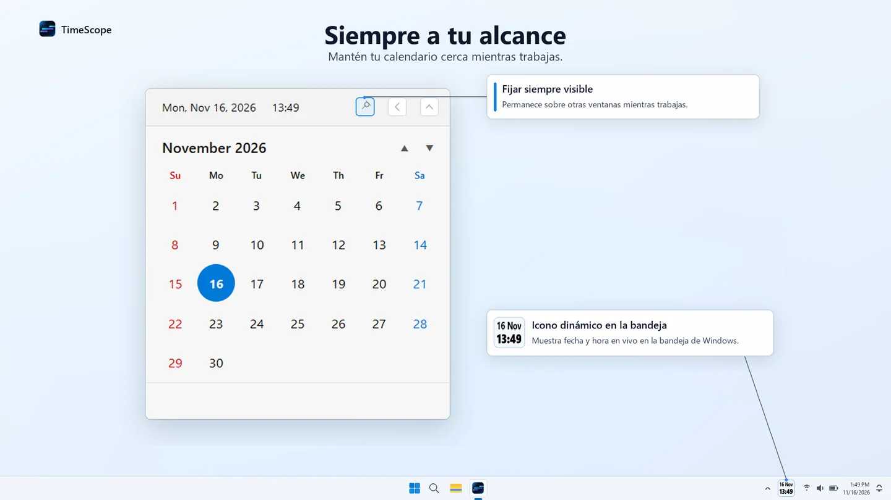

Ve más meses a la vez
Comienza con un mes compacto y amplía horizontal y verticalmente aprovechando el espacio disponible de tu ventana y pantalla.
Un calendario de escritorio ligero para Windows para ver varios meses, seleccionar rangos de fechas y conocer su duración de un vistazo.

Diseñado para explorar fechas rápido, contar días al instante y mantenerse ligero en tu escritorio.
Comienza con un mes compacto y amplía horizontal y verticalmente aprovechando el espacio disponible de tu ventana y pantalla.
Arrastra sobre cualquier fecha para resaltar un rango y ver al instante el número exacto de días en una etiqueta flotante.
Desbloquea comparación multibanda, selección de monitor y festivos y laborables personalizados mediante una compra única.
Descubre cómo TimeScope te ayuda a visualizar más tiempo de un vistazo, medir rangos y planificar con claridad.
Presentación oficial (2:31) · Narración en inglés con subtítulos en 7 idiomas (incluido español).
Todas las funciones principales son gratuitas, sin agendas complejas ni sincronización en la nube.
Amplía tu calendario horizontal y verticalmente para aprovechar el espacio disponible de tu ventana y pantalla.

Calcula al momento la duración de un viaje o proyecto entre dos fechas, incluso entre meses distintos, sin contar a mano.

Ajusta el inicio de semana, las referencias visuales y el idioma directamente desde el menú sin reiniciar.

Fija el calendario sobre otras ventanas mientras trabajas y consulta la fecha de hoy en el icono dinámico de la bandeja de Windows.

Las funciones principales son gratuitas. Si necesitas funciones avanzadas, puedes desbloquear Pro dentro de la app vía Microsoft Store.
Toda la visualización de varios meses, selección de rangos y personalización básica.
Compra única opcional dentro de la aplicación a través de Microsoft Store.
TimeScope Pro es un complemento duradero de pago único dentro de la app a través de Microsoft Store ($4.99 USD precio base; el precio local y los impuestos varían según la región). Sin suscripción.
Capturas reales de la aplicación que muestran tanto la edición gratuita como TimeScope Pro.
Vista de calendario de escritorio con seis meses a la vista y una selección continua de 90 días.
Descarga TimeScope – Visual Calendar gratis desde Microsoft Store para Windows 10 y Windows 11 (x64).
Obtener en Microsoft Store